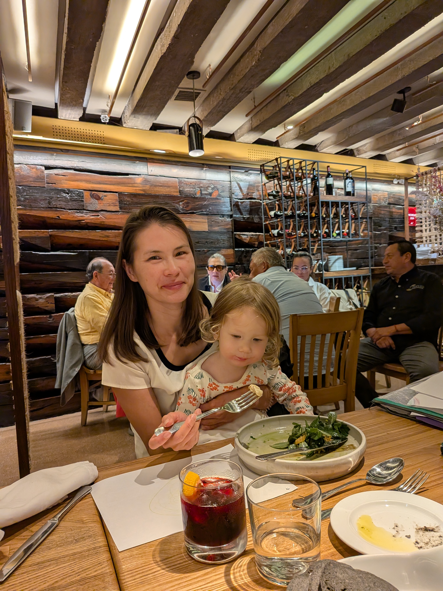
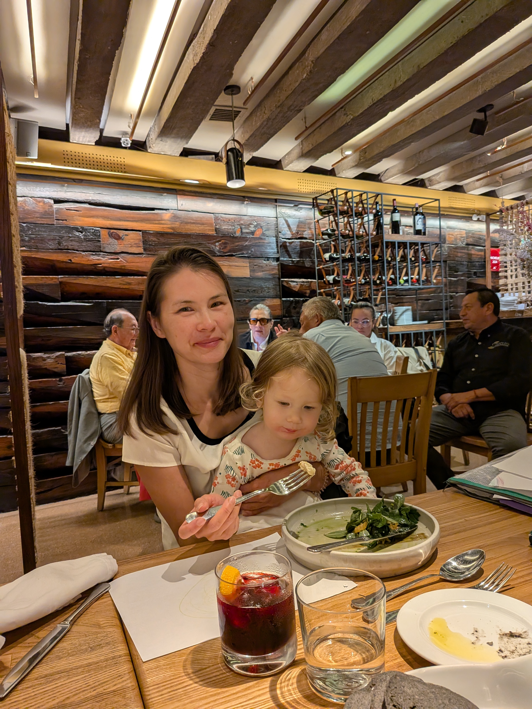
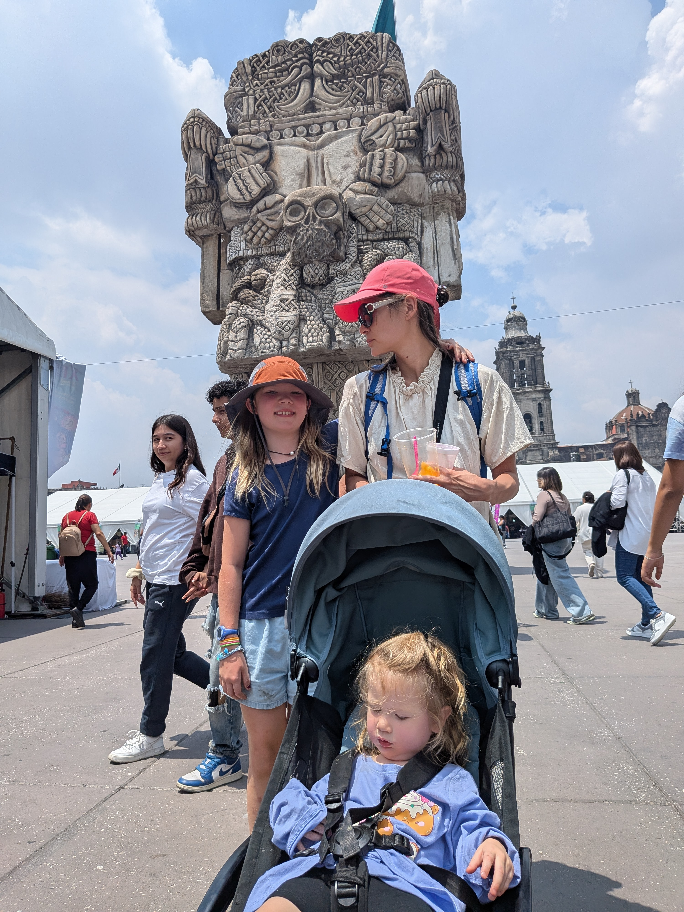
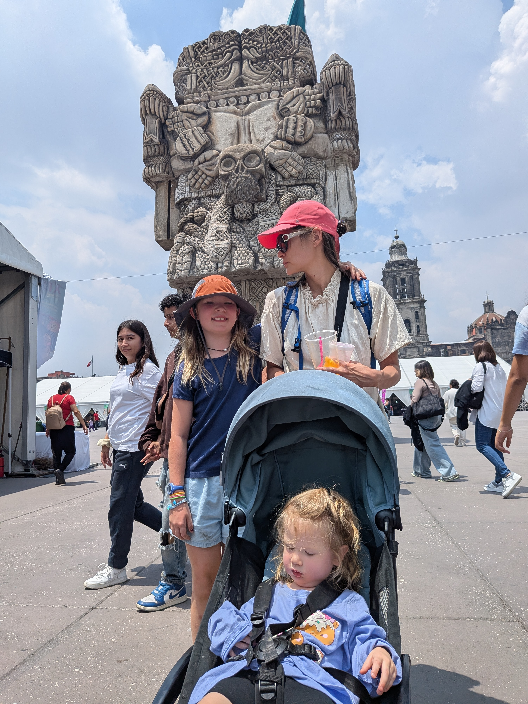

Mon 11 Aug - Arrival
After a long travel day, we finally touched down in Mexico City around 9pm. The girls were troopers on the flight, and we made our way to our Airbnb in the beautiful Condesa neighborhood. The tree-lined streets and art deco buildings were gorgeous even at night. Everyone crashed hard - we had a big week ahead!
Tue 12 Aug - Condesa Day
Our first full day was all about exploring Condesa. The avocado toast was gorgeous - perfectly fanned slices drizzled with olive oil. We grabbed pastries at Ficelle and let the girls run wild at Parque Mexico. The churro-making class was a hit - even little Marie got her hands in the cinnamon sugar! Later we stumbled upon a vibrant tianguis (street market) and ended with dinner at MeroToro.

 

Wed 13 Aug - Hot Air Balloon and Pyramids
The 4am wake-up was absolutely worth it. Floating above the ancient pyramids at sunrise, surrounded by colorful balloons - pure magic. We had breakfast at La Gruta cave restaurant, then our wonderful guide led us through the ruins. On the drive back, we made an impromptu stop at Los Caramelos for tacos - the best kind of detour!
Thu 14 Aug - Templo Mayor
Started with a panaderia tour - the girls loved selecting pastries with the metal trays. Then to the somewhat spooky Templo Mayor with its tzompantli (wall of skulls). In the Zocalo, we lucked into a local culture festival with a giant Coatlicue replica!
 

Fri 15 Aug - Casa Azul and Coyoacan
The iconic blue walls of Casa Azul were even more vibrant in person. Sorenne found a red Spanish fan and declared herself "muy elegante." We wandered Coyoacan eating pistachio ice cream and finished at the famous coyote fountain.

Sat 16 Aug - Xochimilco and Anthropology Museum
Xochimilco was sensory overload - colorful boats, mariachi music, flower crowns! Sorenne got her name embroidered on a little purse. At the Anthropology Museum, standing before the massive Coatlicue was awe-inspiring. And yes, more ice cream!
Sun 17 Aug - Sunday Funday
Our last full day started with street barbacoa tacos - Linnea loved the salsa bar! Then Panaderia Rosetta where Sorenne declared her guava rol "the best pastry ever." We caught Muevete en Bici - thousands of cyclists on car-free Reforma. Perfect goodbye!
Mon 18 Aug - Heading Home
Packing up was bittersweet. Mexico City stole our hearts. The girls are already asking when we can come back. Hasta pronto, Ciudad de Mexico!
Trip Highlights
- Hot Air Balloon over Teotihuacan
- La Gruta cave restaurant
- Churro-making class
- Casa Azul
- So many tacos!
- Ice cream every day